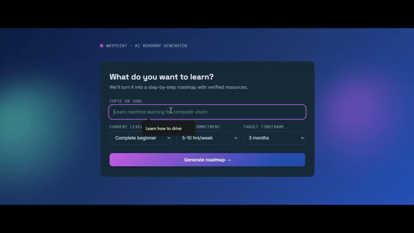
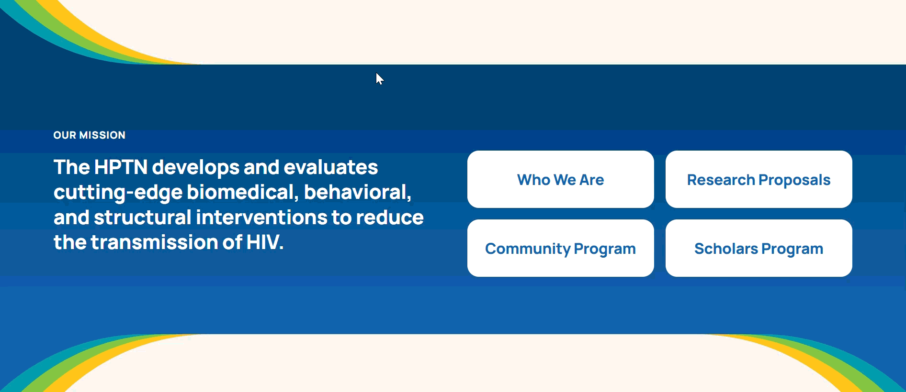
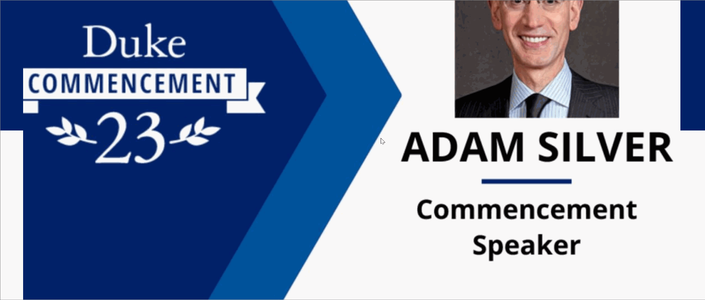
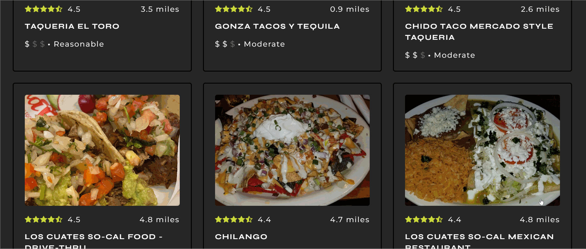
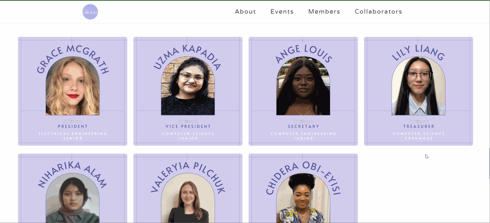
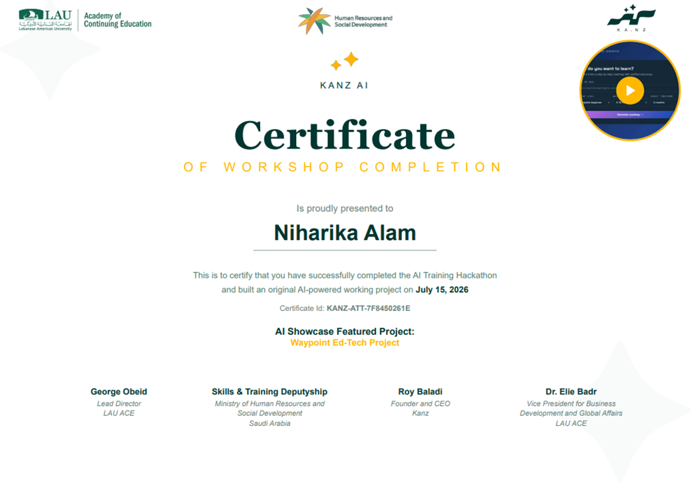
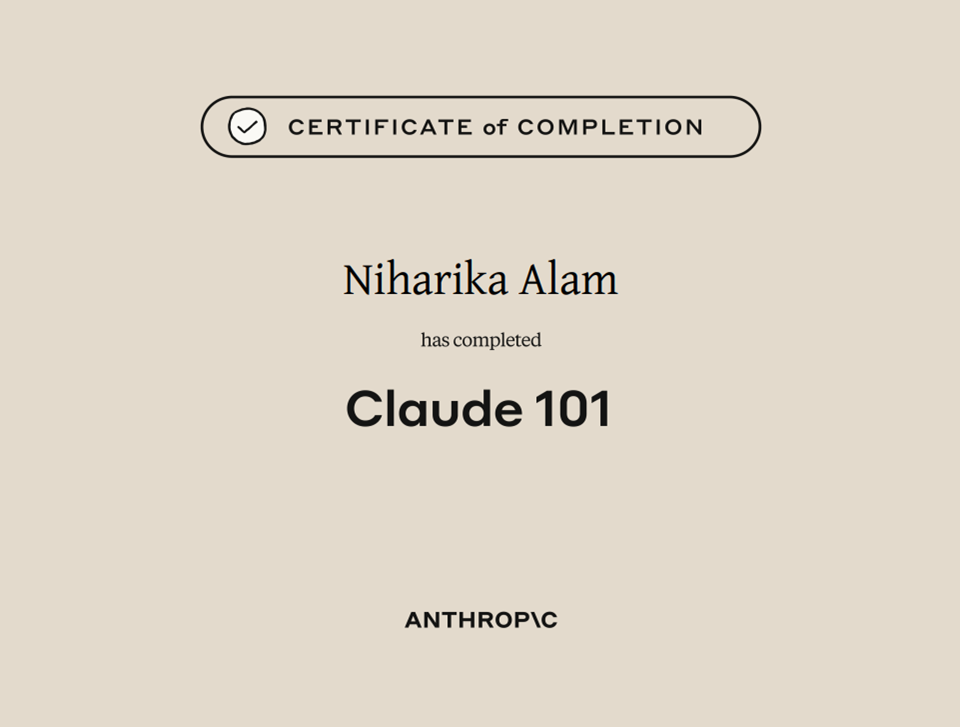
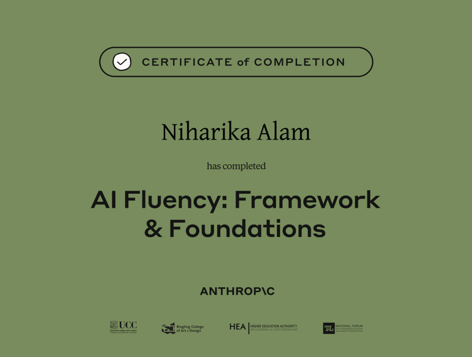

Currently Reading
The Stalker
I am frontend developer based in New York with a passion for creating user interfaces and designs that captivate!
Hi, my name is Niharika and I like coding and cats!
Graduated from the City College of New York with a Bachelor's in Computer Science.
Bangladeshi-American and New Yorker passionate about front-end development, responsive web design, and UX/UI design.
I had the privilege of interning as a software engineer, tech support, and web developer and have decided that web development, specifically front-end, is where my heart lies. I enjoy creating user interfaces and designs that captivate!
When I am not coding or creating graphics on my free time, I like to take nature walks and watch videos of animals. Pandas are my favorite!
I also enjoy reading and writing short stories.
The Stalker

An AI-powered roadmap generator that drafts a custom curriculum with up-to-date resource links based on the user's time budget.

A Drupal redesign of the HPTN website, building accessible Twig/SCSS/JS components for a scalable 12-content-type architecture.

A redesign of the flagship news website of Duke University using Drupal 9 as a CMS and Gutenberg Editor for story pages, combining core blocks with a library of custom blocks developed specifically for their needs.

A webapp that utilizes the Google Places API to find the 20 taco shops nearest to the WeWork located in Raleigh, North Carolina.

A web app that provides 3 workspaces to keep a user's work, school, and personal life separate and organized. Each workspace also include subcatergory pages such as: Ledger, to-do list, notes, grocery, health, etc.

A website for the CCNY Women in Computer Science (WiCS), which provides information for students to learn more about the WiCS club and what it has to offer including upcoming events, past collaborators, and current members.
Built functional and appealing interfaces for web and mobile-based applications using popular CMS frameworks like Drupal or Wordpress. Translated design comps and wireframes into semantic HTML + CSS code that is consistent across all browsers and platforms.
Assisted in the setup of new computer equipment and installed software, configured wireless devices to access the DOE network onsite, and troubleshooted hardware and software problems.
Oversaw and set timelines and tasks to a team of 4 web developers, identified user and system requirements for company website, and refined website specifications and resolved technical issues.
Participated in 10+ agile workflow meetings with 6 software engineers, worked alongside 3 specialists in IT to learn how to maintain MAC operating systems, and implemented changes to company website using Eclipse C++ and git.


